PM Assist Signa Excite (E2, 11.0 & G3)
Prerequisites
Important: When running the following tasks in PM mode: Grafidy3, Coherent Noise and Signal to Noise Check, use SPT (System Performance Testing (SPT)). When running LVShim in PM Mode, use LVShim.
1 LVShim
Procedure
- Landmark the LVShim Phantom as shown in the illustration below.
(At this time, only the LVShim Phantom should be placed on the cradle.)
Figure 1. Landmark for LVShim
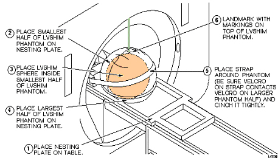
- Click on the Scan icon shown in the illustration below to launch
the Patient Information window with the Patient
Protocols.
Figure 2. Patient Information Window

- Select New Pt, and the Patient
Information window will launch with the Patient Protocols
shown in the illustration below.
Figure 3. Patient Protocols

- To run the LVShim procedure, type the following:
-
geservice in the Patient ID field and 150 in the Weight Lb field shown in the illustration below.
-
A Patient Name for the LVShim test that will be easy to find in the browser (Shim PM Test for this example).
Figure 4. Patient Information
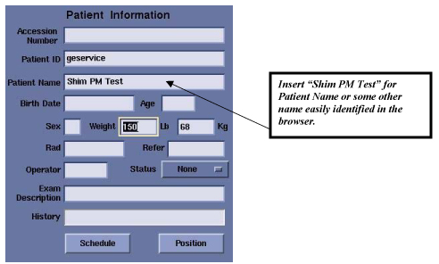
-
- From the Patient Protocols window shown
in the illustration below:
- Select Service from the pull-down in the upper right corner
- Click Other at the bottom. A Protocols
selection box will display as shown in Figure 6.
Figure 5. Patient Protocols Window

- From the Protocols selection box, select 0.19 LVShim in the Protocols column and LVShim Localizer, Cal:Syst in the Series column. (See the illustration below.)
Figure 6. Protocols Selection Box
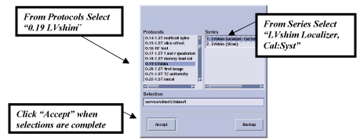
- Click Accept when the selections are correctly completed. (See Figure 6.)
- A pop-up message with the text, A change has been
made to the Patient Position, Patient Entry, and/or Coil. Please verify
this selection and continue, will display in the Patient
Information section of the console. Click Apply All to continue. (See the illustration below.)
Figure 7. Verify Changes to Patient Information
 note:
note:For TwinSpeed, when the pop-up displays with the message, Whole or Zoom?? , select Whole.
- From the Scan Prescription screen:
- Click Save Series shown in the illustration
below.
Figure 8. Scan Prescription Screen

- Click Auto Prescan, and verify that the Prescan values are within an acceptable range: R1 = 13 ±2, R2 = 13 ±2, TG is 151-171.
- Click Save Series shown in the illustration
below.
- While in the Center Freq. Fine (CFH) mode, verify that the frequency peak is centered in the display.
- After locating the best signal, open the Frequency menu at the top of the Manual Prescan window,
and select Save Frequency to save the new center
frequency.note:
If the prescan is not within the acceptable range, the issue must be resolved before continuing this procedure.
- Click Scan on the Scan Prescription screen to initiate the LVShim Localizer Cal:SYs scan. (See Figure 8.)
- To access the image browser, click the Browser icon and the browser window shown in the illustration below will display.
- In the browser, locate the image created when the LVShim Localizer,
Cal:Syst scan was performed.
- Find the Patient Name in the Examination column (left column), and look for the name entered in Step 4 (example used in the Shim PM Test).
- Click on Shim PM Test, and the scans
will now display in the right column of the illustration below.
Figure 9. Image Browser Window
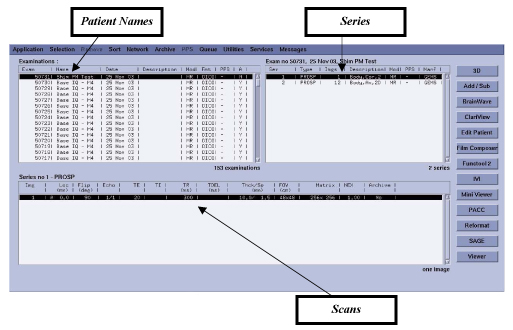
- Click on the appropriate series in the right column. If a new name was used in Step 4, there will be only one series (one image with the description: Body,Cor,2) displayed in the right column at this time as shown in Figure 9.
- Double click on the image line in the lower window of Figure 9 to automatically open the image shown in the illustration below.
Figure 10. Phantom Centering Check

- Reposition the phantom and run the LVShim Localizer,
Cal:Syst until the phantom is properly centered.note:
It is important to center the LVShim Phantom within the magnet bore. The phantom should be moved slightly toward the front of the Magnet (toward the Table) as shown in Figure 10. The goal is to overlap the center of the phantom and the display grid.
- Once the LVShim Phantom is properly centered, the LVShim scans
can be acquired. To return to the Patient Protocols window, click the Scan icon shown in Figure 2.
- Click New Series on the Rx manager shown in Figure 8.
- Click Other in the Patient Protocols window shown in Figure 5. A Protocols selection box displays. (See the illustration below.)
- From the Protocols selection box, select 0.19 LVShim in the Protocols column and LVShim Scan in
the Series column. (See the illustration below.)
Figure 11. Protocols Selection Box

- Click Accept when the selections are correctly completed. (See Figure 11.)
- To start the LVShim scan, click in the following order: Save Series => Download => Scan as shown in the illustration below. At the completion
of the scan sequence, proceed to the LVShim tool to verify results.
Figure 12. Start LVShim Scan

- To access the Common Service Desktop (CSD), click on the Tools
icon shown in the illustration below.
Figure 13. Tools Icon on CSD

- Select Service Browser on the Service Desktop Manager to display the CSD home page.
- When the CSD displays, click on the PM icon shown in the illustration
below.
Figure 14. PM Icon on CSD

- Click on the PM Assist folder in the left
column of the PM home page shown in Figure 15, Figure 16, Figure 17, and Figure 18. This will expand the folder and show the PM selections.
Figure 15. PM Assist Folder on PM Home Page

Figure 16. Close Up of PM Assist Folder
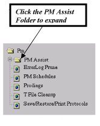
Figure 17. Expanded PM Assist Folder
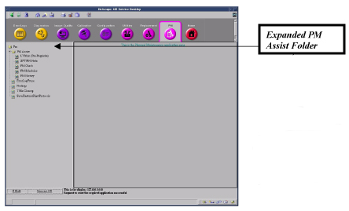
Figure 18. Close Up of Expanded PM Assist Folder

2 LVShim Tool
Procedure
- Click on LVShim in the expanded PM folder shown in the two illustrations below. (The right
side of the screen will provide more details about LVShim and a link
to start the LVShim PM tool.)
Figure 19. LV Shim Page
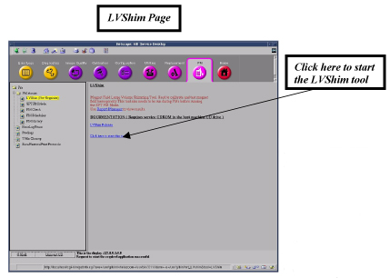
Figure 20. Expanded PM Folder

- Click on the link: Click here to start this tool shown in Figure 19 to start the LVShim tool. (See the illustration
below.)note:
For TwinSpeed, when a pop-up displays with the message, Whole or Zoom??, select Whole.
Figure 21. Open LVShim Tool

Default values for LVShim analysis tool:
-
Shim Type = Gradient
-
Image Data = Auto fills with the latest LVShim images.
-
Operation Mode = Service
-
Display Mag and Phase Diff Images = No
-
Calibration File = lv_brm_hfd_acgd_3gc_45dsv
-
Existing Current In Each Coil.
note:Verify that the image data matches the exam series image scanned in Figure 9.
-
- To start the analysis, press Enter. The
results will be returned as follows: Grand Shim did not pass as shown in the illustration below.
(1, 0): -137.67 [10]. The Z1 limit is 10; the actual measure value is -137.67.
Grand Shim Has Not Passed! (See the illustration below.)
Figure 22. Grand Shim Has Not Passed
 note:
note:Go to Step 9 if the message displayed is: Grand Shim Passed.
LVShim Harmonic Correlation
1,0 = Z1, 2,0 = Z2, 3,0 = Z3, 4,0 = Z4, 5,0 = Z5
6,0 = Z6, 1.1 = Y, 1,-1 = X, 2,1 = ZY, 2,-1 = ZX
2,2 = X2-Y2, 2,-2 =XY, 3,1 =Z2Y, 3,-1 = Z2X
3,2 = Z(X2-Y2), 3,-2 = ZYX, 3,3 = Y3, 3,-3 = X3
- Entering comments is allowed, but not required. Press Enter to continue.
- To accept the new Grad Shim values, type y and press Enter. (See the illustration below.)
Figure 23. Accept Grand Shim Values
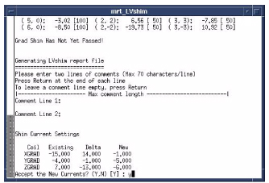
- When the tool asks, Exit LVShim?, type n and press Return. (See the illustration
below.)
Figure 24. Remain in LVShim Tool
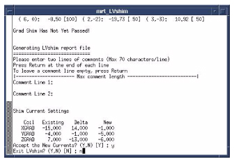
- Return to the Scan Prescription screen
and click Scan. When scans are complete, return
to the LVShim tool (shown in the illustration below) and press Enter.
Figure 25. Return to LVShim Tool
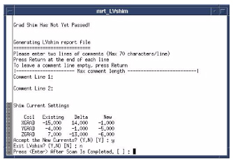
- The LVShim tool will automatically select the 12 new images
created by the last scan. Press Enter to start
the analysis. (See the illustration below.)
Figure 26. Start LVShim Analysis
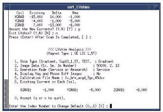
note:Grad Shim is capable of reducing the X (1,-1), Y (1,1) and Z (1,0) harmonics. If any of the higher order harmonics are out of specification, a Supercom Shim may be required.
- In the example in the illustration below, LVShim has now passed.
Depending on the system, it may take only one pass or it may take
several. Repeat the procedure until the system passes the LVShim.
Figure 27. Grand Shim Passed
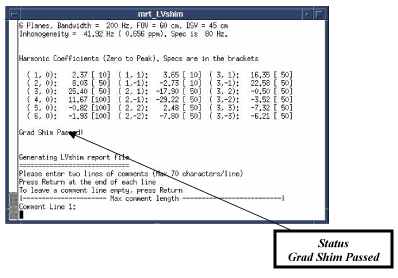
- Enter any applicable comments, and press Enter. (See the illustration below.)
- To reject the new current values, type n and press Enter. (See the illustration below.)
Figure 28. Reject New Current Shim Values

- When the tool asks, Exit LVShim?, type y and press Enter. (See the illustration
below.)
Figure 29. Exit LVShim Tool
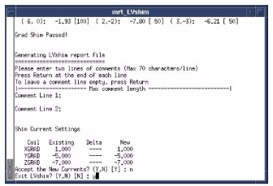
3 System Performance Testing (SPT)
Procedure
- Landmark the phantom as described below, using the appropriate
DQA Phantom. (Remove the LVShim Phantom for this test.) The process
for proper landmark is:
- Insert DQA phantom and turn on the alignment lights.
- Move cradle so alignment lights align with the center mark on the DQA phantom.
- (For E2 and G3, 3.0T) Remove the DQA Phantom, and insert TLT Sphere and loader as shown in the illustration below. For 11.x leave the DQA phantom as is.
- Position the TLT Sphere and loader so the centering line is
aligned with the alignment light.note:
Important: The DQA phantom should be used for 11.0, 1.5T systems.
Figure 30. Phantom Positioning for SPT, PM Mode
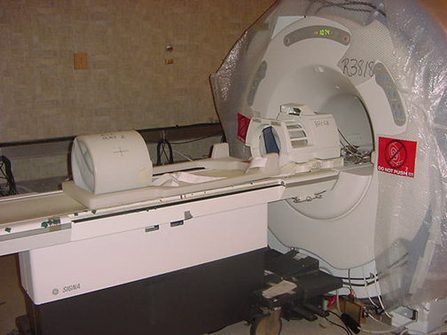
note:Refer to SPT pop-up message on scanner to select the appropriate coil part number.
- From the CSD home page, select the PM mode by clicking on it in the expanded PM folder
on the left side of the page (shown in the two illustrations below).
Figure 31. SPT PM Page
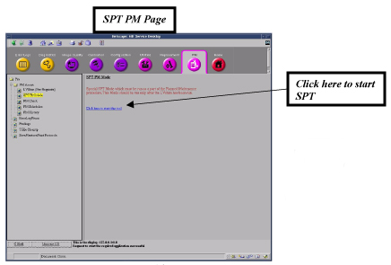
Figure 32. Select SPT PM Mode

- Start the SPT tool by clicking the link: Click here to start this tool shown in Figure 31.
- When a window displays requesting selection of the Head Coil
and Phantom Type, select the appropriate combination by clicking on
the corresponding radio button, then click the Start button. (See the illustration below.)note:
The DQA Phantom should be used for 11.x 1.5T systems.
Figure 33. Head Coil Selection Screen

- The SPT screen shown in the illustration
below will display. (For the PM SPT mode, all the tests are preselected
and cannot be changed. The test takes just over one hour to complete.)
For more information on System Performance Tests, including phantom setup, follow the System Performance Test (SPT) procedure.
-
The remaining test time will display In the upper right corner of the SPT screen. (See the two illustrations below.)
Figure 34. Remaining Test Time

Figure 35. Close Up of Remaining Test Time

-
Test progress and results will display in the lower portion of the SPT screen shown in the illustration below.
Important: Failures MUST be resolved and the SPT must be re-run before proceeding to the PM Check. SPT in PM mode executes on a TRM System in the Zoom mode only. If failures occur, verify that all subsequent iterations are run in Zoom mode for TRM Systems.
Figure 36. Test Progress and Results
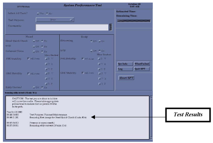
-
4 PM Check
Procedure
- To verify that the PM completed successfully, click on PM Check. (See the two illustrations below.)note:
PM Check will only pass if LVShim passes within 24 hours of a passing run of SPT.
Figure 37. Start PM Check
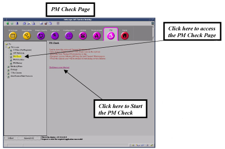
Figure 38. Access PM Check

- The PM Check window opens, and the information
shown in the illustration below displays.
Figure 39. PM Check Tool Opens

- As seen in the example above, the Body GRE Stab has a SEVERE failure.
-
This must be resolved for the PM Assist to be considered complete. The FE will have 21 days to resolve SEVERE issues, and the system will notify the operator of the problem if not resolved in the 21-day window.
-
For the PM Assist to be successful and complete, all test results must pass. (See the illustration below.)
Figure 40. Indication that Tests Passed

-
5 PM Schedule
The PM Schedules tool will show the following status:
-
Date of Last LVShim and SPT PM Mode runs on the system,
-
When the next Planned Maintenance is due,
-
Marginal/Severe failures remaining from last Planned Maintenance, and
-
When the clinical user will be notified of the remaining Severe failures.
Procedure
- Click on PM Schedules in the expanded PM folder. (See the two illustrations below.) The right side of the screen will provide more details about PM Schedules and a link to start the PM Schedules tool.
- Click on the link: Click here to start this tool shown in the illustration below to start the PM Schedules tool.
Figure 41. Start PM Schedules Tool

Figure 42. Access PM Schedules Page
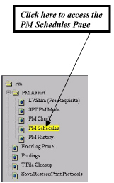
5.1 PM Never Performed on This System
Procedure
- If Planned Maintenance was not performed on this system, the following message displays in the tool, There is no PM performed on this system at least once. Schedule a date for PM, Run SPT & LVS PM tests and Hit PM Check link on CSD.
- Enter your Name or initials and press Enter. (See the illustration below.)
Figure 43. Enter Name or Initials
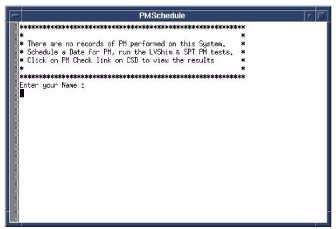
- Enter the next scheduled PM date, and press Enter. (See the illustration below.)
Figure 44. Schedule Next PM Date

5.2 System Following Normal PM Schedule
Procedure
- The tool will display when the last PM was performed and when
the next PM is scheduled. (See the illustration below.)
Figure 45. Last PM Performed and Date Next PM Scheduled
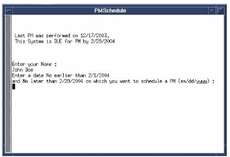
- Enter the date the next PM will be performed, making sure the
date is within the specified time limit provided by the tool, and
press Enter. (See the illustration below.)
Figure 46. Enter Date for Next PM

6 PM History
Procedure
- Click on PM History in the expanded PM folder. (See the two illustrations below.) The right
side of the screen will provide more details about PM History and
a link to start the PM History tool.
Figure 47. Start PM History Tool

Figure 48. Access PM History Page

- Click on the link: Click here to start this tool. (See Figure 47.)
Figure 49. Information on PM History Page

- The PM History page will display the following
information. (See Figure 49.)
- Current Date
- Last Performed PM Date
- Month Next PM Due
- Customer Scheduled PM Date
- Field Engineer PM Date
7 Finalization
Procedure
- Perform SaveInfo to reuse PM Assist test results at a later date.